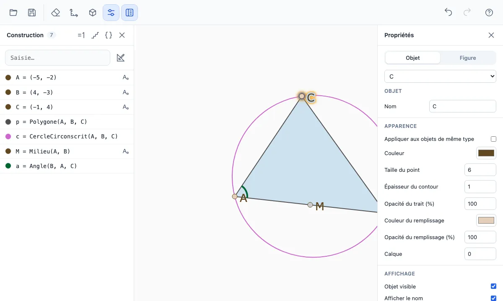
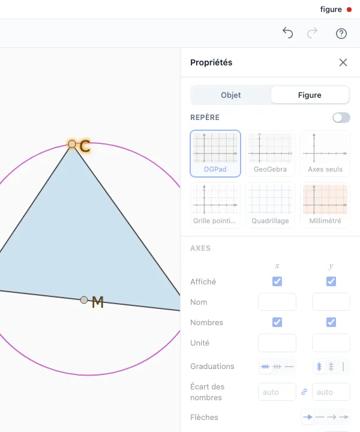

Propriétés et repère

Le panneau
- Ouvert par ou par de la zone contextuelle ; fermé par sa croix, le même bouton ou Échap.
- Un clic droit l’ouvre à tout moment sur ce qu’il vise : un objet, son nom ou sa ligne, toute la sélection si l’objet en fait partie, et l’onglet Figure dans le vide ou sur un axe. L’outil en main garde ses arguments, et refermer le panneau, par Échap notamment, ramène la palette s’il en a pris la place, l’outil toujours en main. Seule exception : pendant la définition d’une macro, le clic droit ne fait rien.
- Il occupe la place de la palette d’outils : ouvrir l’un ferme l’autre.
- Deux onglets : Objet et Figure.
- L’objet réglé se choisit dans la figure, par sa ligne, ou dans la liste « Choisir un objet… » (objets cachés compris). Un clic dans la figure y sélectionne au lieu de construire ; boutons et cases s’y désignent sans s’actionner. Un outil de la palette ou la ligne de saisie construisent normalement, l’objet créé s’affichant dans le panneau. Un côté ou un sommet d’un polygone sélectionné montre les réglages du polygone.
- Les modifications sont immédiates et annulables.
- Champs numériques : glisser horizontalement règle la valeur (Maj : dix fois plus fin), un clic permet de la taper. Un glissement compte pour une seule étape d’annulation.
- Un bouton ↺ près d’une couleur la ramène à celle que l’outil donne par défaut.
L’onglet « Objet »
| Section | Réglages |
|---|---|
| Objet | nom ; pour une commande ou une expression, définition |
| Programmes | d’un point ou d’une expression : sa tortue et ses programmes d’événements, en blocs |
| Apparence | appliquer aux objets de même type, couleur, taille du point, épaisseur, contour, opacités du trait et du remplissage, couleur du remplissage, pointillés, calque (ordre de dessin) |
| Affichage |
objet visible, afficher le nom, objet fixe
(polygone), objet inerte, taille du texte,
décimales de la valeur (ou ne pas l’afficher ;
pour un texte, celles de ses valeurs
%formule%),
visible si, largeur du
champ de saisie
|
| Point | forme (cercle, carré, croix, losange), position du nom en degrés, trace, pas horizontal et vertical (déplacement par sauts) |
| Segment | codage (traits de longueur égale) |
| Angle | rayon de l’arc, marque d’angle droit (équerre ouverte, arc, carré, point, équerre) |
| Lieu, liste | nombre de points ; épaisseur des segments |
| Curseur | pas, longueur, vertical, couleur et taille de la poignée |
| Cadre | d’une image : couleur, épaisseur (0 : pas de cadre), opacité du trait, pointillés ; son opacité et son calque restent dans Apparence |
| Animation | vitesse (0 : arrêt), sens inverse, à l’extrémité : recommencer, aller-retour ou arrêter |
Visible si
Dans la section Affichage : le nom d’une expression, une formule
(m == 2) ou rien. L’objet n’est visible que si elle
est vraie, et elle ne peut pas dépendre de l’objet lui-même.
La ligne d’une case nomme les objets dont elle est la condition : y ajouter un nom le relie à la case, en retirer un le rend toujours visible. Supprimer la case garde ces objets, toujours visibles.
Couleurs à la création
Un objet créé prend la couleur de son type : points libres ou sur objet en orange, points construits en gris, segments rouges, droites bleues, cercles verts, polygones remplis d’indigo… Une nouvelle figure a un fond blanc.
Plusieurs objets
Sur une sélection multiple, seuls les réglages communs à tous sont affichés ; une valeur qui diffère d’un objet à l’autre est en italique gris. Ctrl-clic, Maj-clic ou appui long (figure ou panneau « Construction ») ajoutent ou retirent un objet.
Objets inertes
Objet inerte : l’objet ne réagit plus au survol, au clic ni au toucher. Il ne se déplace plus et ne se désigne plus dans la figure : le pointeur atteint ce qui est dessous. Panneau de propriétés ouvert, aucun objet n’est inerte, pour pouvoir le sélectionner et décocher la case.
L’onglet « Figure »

Un clic sur un axe ouvre cet onglet.
| Section | Réglages |
|---|---|
| Repère | affiché ou non ; modèles DGPad, GeoGebra, axes seuls, grille pointillée, quadrillage, millimétré (apparence seule, ni zoom ni fond) |
| Axes (x et y) | affiché, nom, nombres, unité (π : multiples de π/2), graduations, écart des nombres (vide : auto ; 🔗 lie x et y), flèches, couleur, taille et gras des nombres, style DGPad ou GeoGebra, demi-axes positifs |
| Grille | affichée ou non, écart des lignes, subdivisions, couleur (celle des axes par défaut), épaisseur, trait continu, pointillé ou tirets |
| Zoom et déplacement | axe fixe à l’écran, zoom centré sur l’origine |
| Figure | fond ; motif, image choisie sur le disque et peinte derrière toute la figure (↺ la retire), avec sa disposition : mosaïque, mosaïque horizontale ou verticale, centré, étiré, remplir, ajuster ; angles en degrés (défaut) ou radians ; segments au-dessus des polygones |
En 3D
| Section | Réglages |
|---|---|
| Axes | trièdre affiché, couleur, épaisseur |
| Sol | affiché, couleur (↺ : bleu dessus, brun dessous), opacité, taille, écart, couleur et épaisseur des lignes |
| Vue | perspective |
Ces réglages sont annulables ; le zoom, le déplacement et la rotation de la vue ne le sont pas.